1. Story Board
Below is the story board based on the tasks we have previously mentioned.
1. Grouping among students
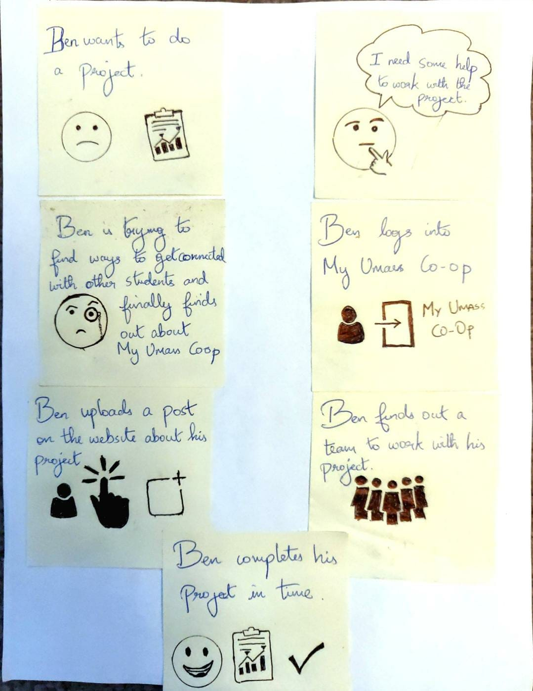
Task-1: Story telling how ben makes a student group.
2. Teacher forming groups
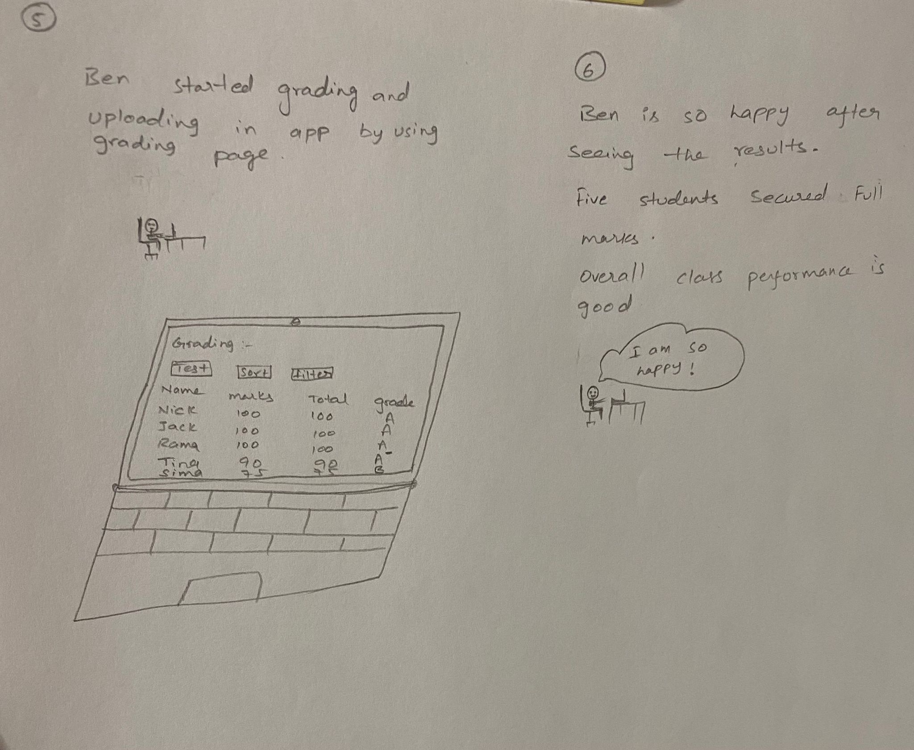
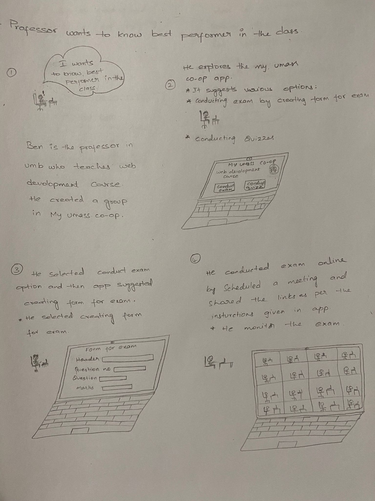
Task-2: Story telling how Mr.Benjamin(Ben) makes a student group for his class.
3. Professor conducting Meeting
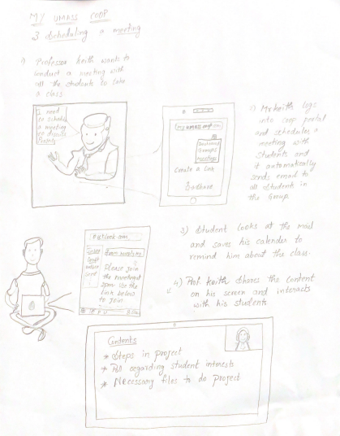
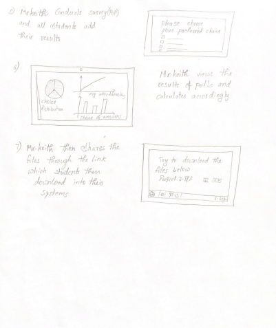
Task-3: Story telling how Mr.Keith schedules meeting for his class.
UI Sketches based on Task Analysis
In the project step-2 we have done task analysis and based on that analysis we have done the following sketches.
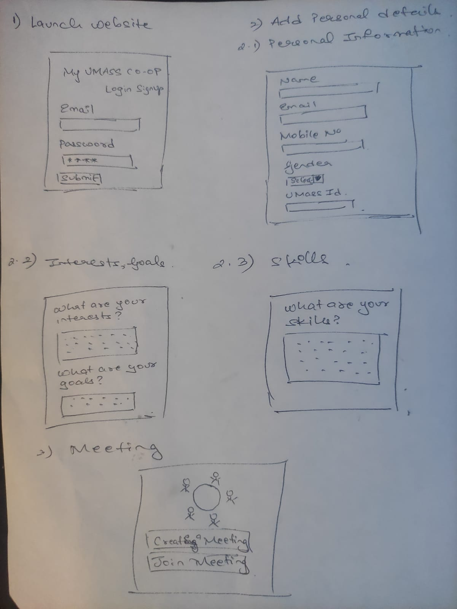
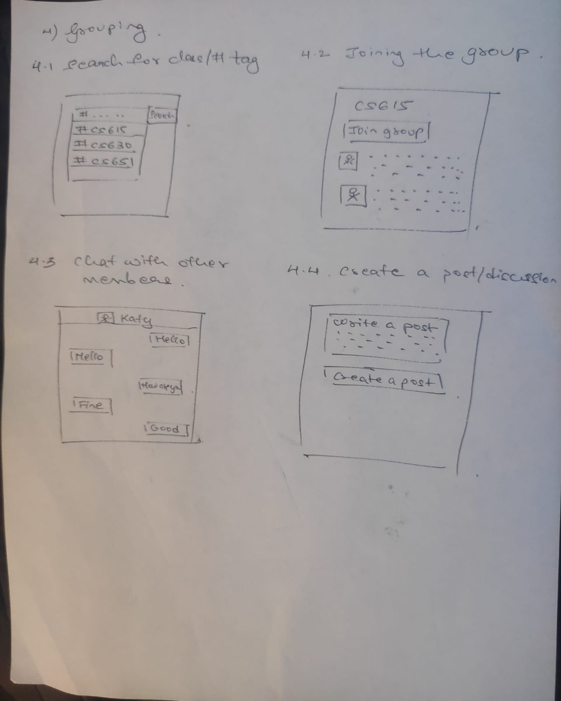
Sketch-1: Ui Sketch-1 of Task-1 showing all the subtasks.
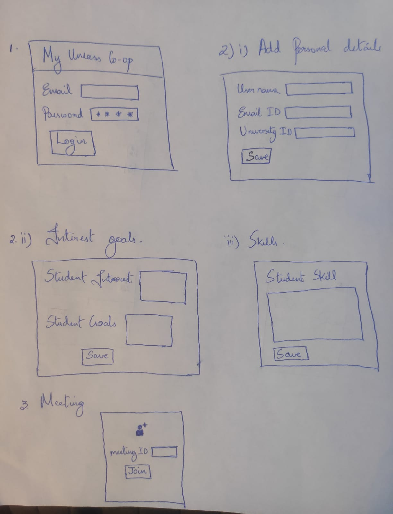
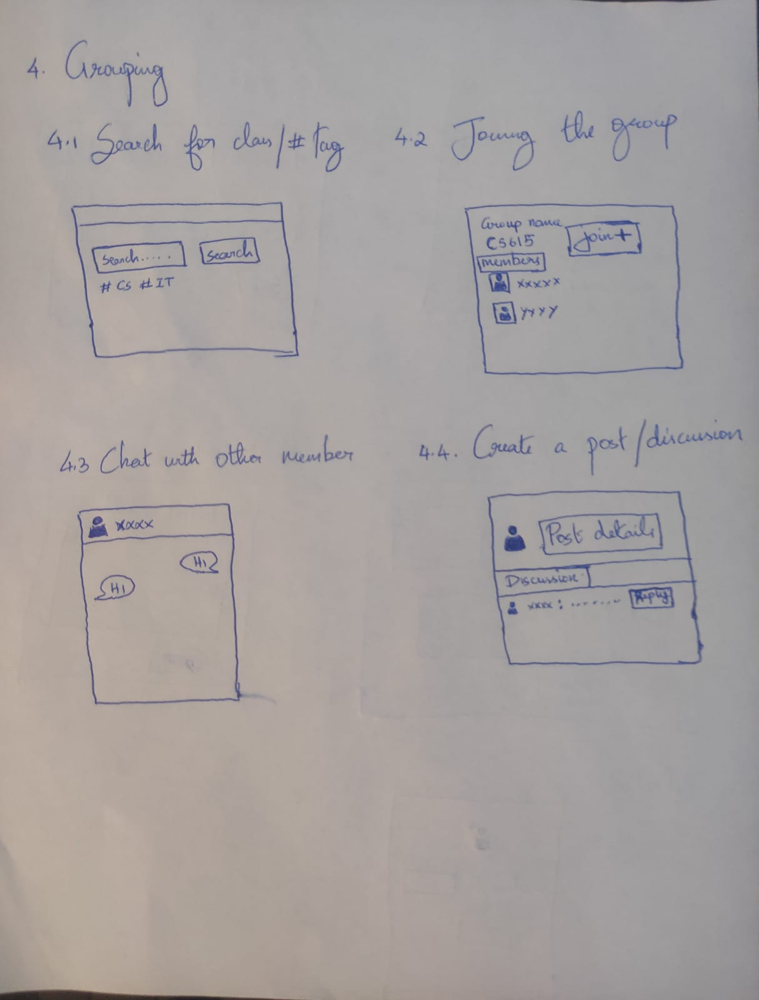
Sketch-2: Ui Sketch-2 of Task-1 showing all the subtasks.
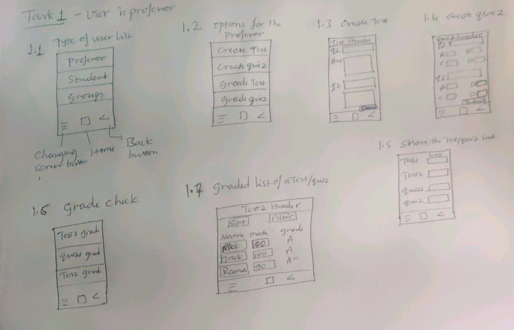
Sketch-3: Ui Sketch of Task-2 showing all the subtasks.
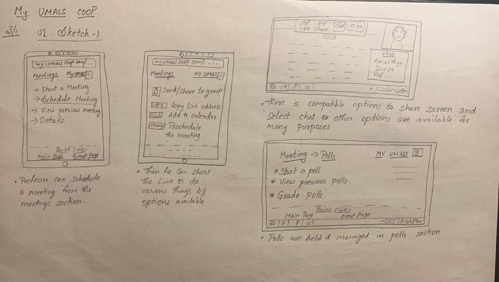
Sketch-4: Ui Sketch of Task-3 showing all the subtasks.
Main Site
To go back to main website Click here.